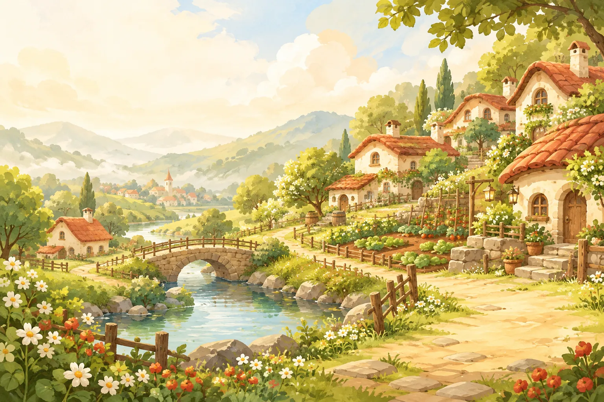

一个一起生活的 Minecraft 小镇
糯米小镇Nomi Town
把日子种进小镇。
种一片田，盖一间屋，等朋友来做客。
使用我们的启动器，启动后自动入服。
小镇印象 · 主题插画
在这里，慢慢生活
从一把木镐，
到一条热闹的小路。
出门探索，带回木材和石头，把第一间小屋安在喜欢的地方。屋旁留一块田，水边留一个钓鱼的位置，收获之后再回家做顿饭。
也可以和朋友一起建造，串门看看彼此的新点子。小镇的日常，就从这些小事开始。
看看小镇能做什么出发前，先认认路
第一次来？从 Wiki 开始。
启动器获取、入门步骤与常见问题，放在同一个地方。更多资料正在整理。